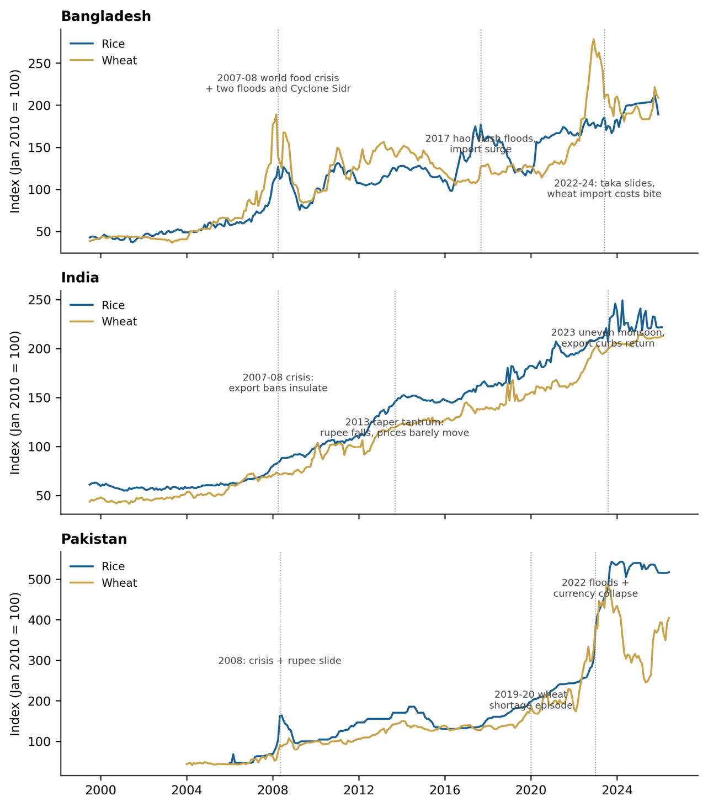
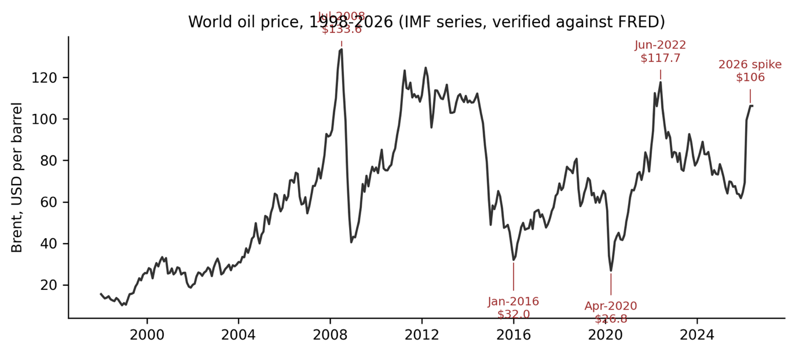
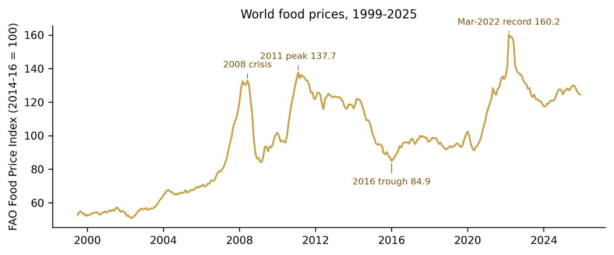
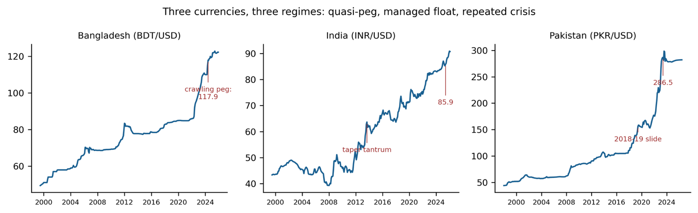
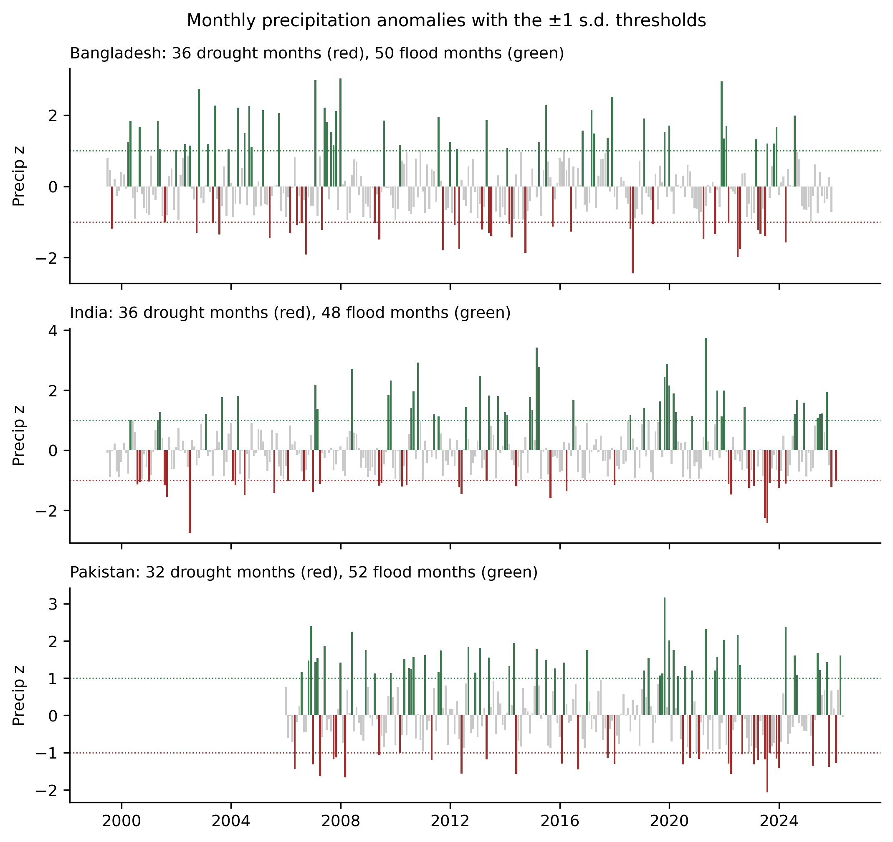
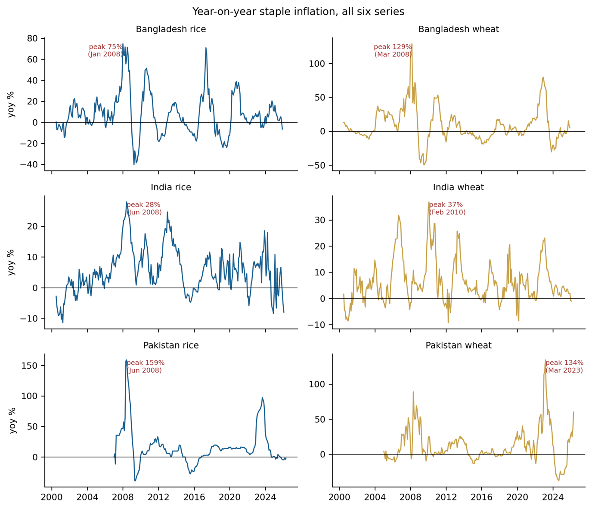
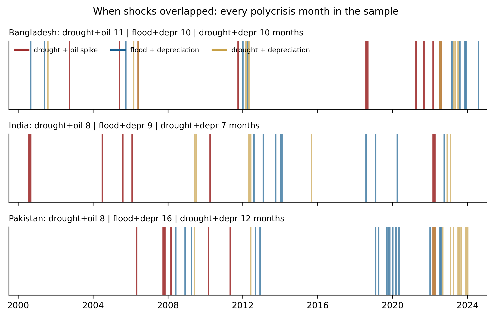
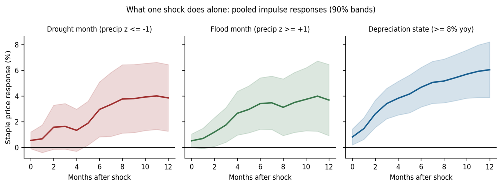
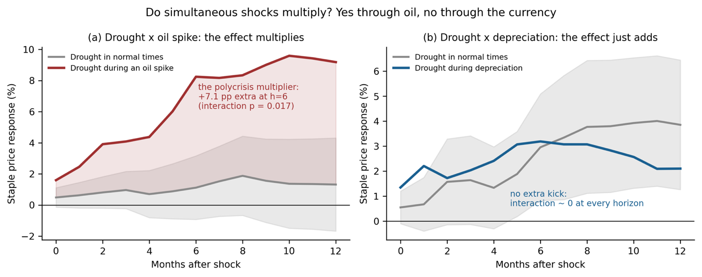
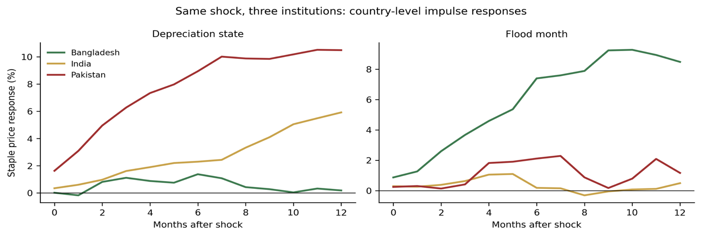

the 2022 monsoon submerges a third of the country
the rupee loses a third of its value in the same year
year-on-year wheat price inflation by March 2023
≈1,000 country-months pulled by script from public archives — FAO, IMF, ERA5-Land. Nothing typed by hand.
Every spike, crash, flood and devaluation located and explained — ten charts, three countries, three decades.
One deliberately simple design — local projections with an interaction term — asks: add, or multiply?
# 1. climate: ERA5-Land → national monthly panel clim = pd.read_csv('bangladesh_climate_panel_clean.csv') # 2. macro: IMF API → Brent crude + BDT/USD brent = fetch_imf_monthly_series('P_BRENT', 1998, 2026) fx = fetch_ifs_exchange_rate('BD', 1998, 2026) # 3. merge every layer on the monthly key panel = clim.merge(prices).merge(brent).merge(fx) panel['rice_yoy_inflation'] = panel.rice.pct_change(12) $ python build_master_panel.py ✓ master panel written — 318 monthly rows
| Date | Rice BDT | Wheat BDT | Precip mm | Brent $ | BDT/USD | FAO FPI |
|---|---|---|---|---|---|---|
| 1999-07 | 11.52 | 8.57 | 520.68 | 19.08 | 49.34 | 52.80 |
| 1999-08 | 11.85 | 8.78 | 424.77 | 20.22 | 49.57 | 54.60 |
| 1999-09 | 11.82 | 8.93 | 248.37 | 22.54 | 49.81 | 54.80 |
| 1999-10 | 11.74 | 9.12 | 185.28 | 22.00 | 50.04 | 53.50 |
| 1999-11 | 11.39 | 9.13 | 17.22 | 24.58 | 50.27 | 53.50 |
| ⋮ | ⋮ | ⋮ | ⋮ | ⋮ | ⋮ | ⋮ |
| 2025-11 | 54.50 | 47.50 | 31.28 | 63.80 | 122.32 | 125.20 |
| 2025-12 | 51.00 | 46.70 | 0.87 | 62.54 | 122.29 | 124.50 |
Record the retrieval with era5_video_demo.py, then save it as
assets/demo-video.mp4 next to this file — it will play automatically on this slide.
July-2008 Brent · June-2023 rupee · the taka’s 2024 crawl · March-2022 FAO record — all matched
the 2007–08 crisis must be visible in every rice series — and it is
one defective climate block failed the audit — “winter is too wet to be Bangladesh” → re-pulled







monthly rainfall vs its own calendar month’s history — drought at ≤ −1, flood at ≥ +1
year-over-year jump in Brent — the “oil spike” state
depreciation running at 8 percent a year or faster


pump groundwater when the rain fails — diesel, litre by litre
substitutes for what dry soil cannot provide — made and moved with fuel
move grain from surplus to deficit districts — freight priced in fuel
p = 0.018
threshold moved down
threshold moved up
p = 0.002 · rice: 2.2 (n.s.)

an import-dependent food economy repricing to its exchange rate in real time
floods move its prices most — the largest climate estimates in the project
procurement, buffer stocks, PDS, export bans — insulation is real, purchasable, not free
| Effect (pooled unless noted) | 3 months | 6 months | 12 months |
|---|---|---|---|
| Drought month | 1.6 | 3.0* | 3.9* |
| Flood month | 1.8* | 3.4** | 3.7* |
| Depreciation episode | 3.4** | 4.7** | 6.0** |
| Drought × oil spike — the multiplier | 3.1 | 7.1* | 7.9* |
| Drought × depreciation — the null | 0.4 | 0.2 | −1.8 |
| Depreciation, Pakistan only | 6.3** | 8.9** | 10.5** |
| Depreciation, India only | 1.6* | 2.3** | 5.9** |
| Depreciation, Bangladesh only | 1.1 | 1.4 | 0.2 |
| Flood month, Bangladesh only | 3.7** | 7.4** | 8.5* |
| Drought month, Pakistan only | 3.4 | 7.5* | 2.4 |
ordinary shocks: single-digit percentages over a year — survivable
drought × oil spike multiplies — +7 pp beyond the sum of parts
drought × weak currency merely adds — no interaction at any horizon
the multiplier passes through oil — maintain strategic fuel access during a bad monsoon
dollar costs against rupee income is the classic staple-market risk position
drought + expensive oil = forward-purchasing alarm, every time